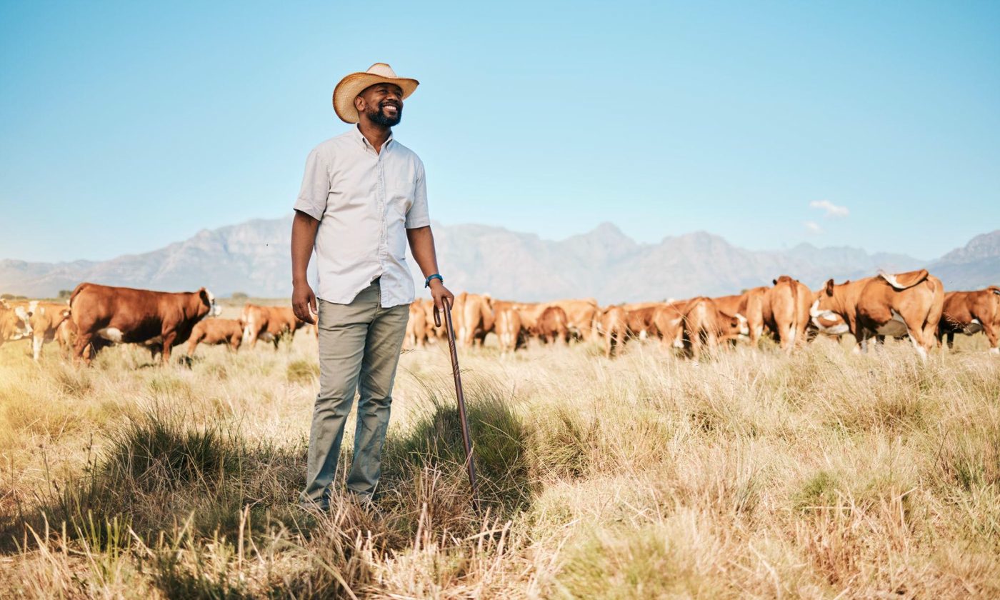

01
Planning
Seasonal planning helps coordinate livestock, crops, equipment and daily tasks.
Our story, values and the work behind the farm.

Zwane Farming is presented as a South African agricultural business focused on livestock and crop production. The website keeps the story straightforward so visitors understand what the farm does before getting in touch.
Our work centres on quality food production, responsible animal care, better use of natural resources and strong relationships with the people around the business.
Seasonal planning helps coordinate livestock, crops, equipment and daily tasks.

Production work focuses on quality, animal welfare and practical farm routines.

Water, soil and equipment need attention because each affects production over time.